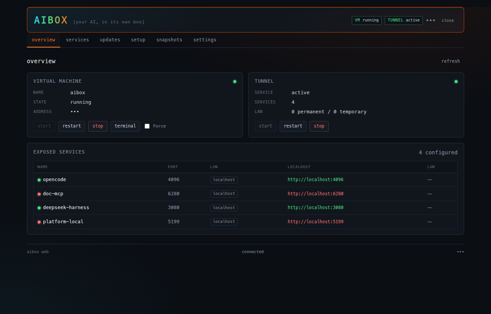
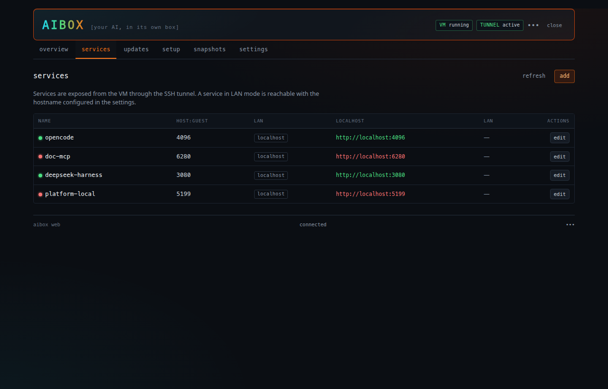
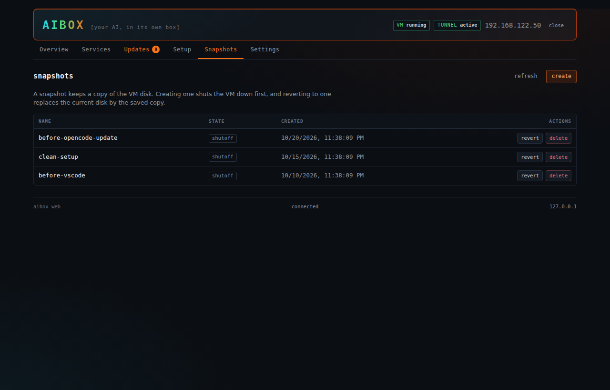

One-command setup
A guided setup installs the guest, the SSH access, the services and the tunnel.
AIBox turns a spare KVM virtual machine into a self-hosted AI development box.

AIBox is a small set of shell scripts.
A guided setup installs the guest, the SSH access, the services and the tunnel.
Services, updates, setup steps, snapshots and the VM lifecycle live in a browser tab.
Each service gets its own port forward and its own bind address.
Expose a single service to the network, per service, without opening the whole VM.
Create, revert and delete VM snapshots from the command line or from the console.
Open the shared folder in your own VS Code, with the path mapped for you.
Check the host and the VM for updates, then apply them one target at a time.
Every setting lives in one readable config file, and the console speaks English and French.
AIBox is not a platform.
A KVM virtual machine on your own hardware.
A local web interface that shows what runs.
A user service forwarding one port per service over SSH.
Clone the repository, run the setup, then pick how you want to work.
git clone git@github.com:malko/aibox.git && cd aibox
./setup.shThe setup walks through the VM, SSH, the services and the tunnel.
./aiboxOne command opens an SSH session with every service forwarded.
./aibox webThe local console shows the services with a live availability dot.
The VM is never exposed directly.
The same state the CLI shows, in a browser tab that stays on your machine.


A dozen commands cover the whole life of the box.
aibox startStart the VM and the tunnelaibox statusState, service URLs, tunnel stateaibox webOpen the local web consoleaibox exec <cmd>Run a command in the VMaibox tunnel <cmd>Tunnel and LAN exposureaibox vscode [dir]Open the VM in VS Codeaibox service-add <n> <p>Add a serviceaibox service-listList the servicesaibox snapshot <cmd>Create, list or delete snapshotsaibox update <target>Update a targetaibox check-updatesCheck for updatesaibox setup [step]Run the setup stepsaibox shutdownStop the tunnel and the VMA recent Linux host with KVM, and a guest image.
virsh and libvirt-clienthttpd for the web consoleShort answers, no marketing.
One repository, a handful of shell scripts, and a virtual machine that behaves like a machine you own.